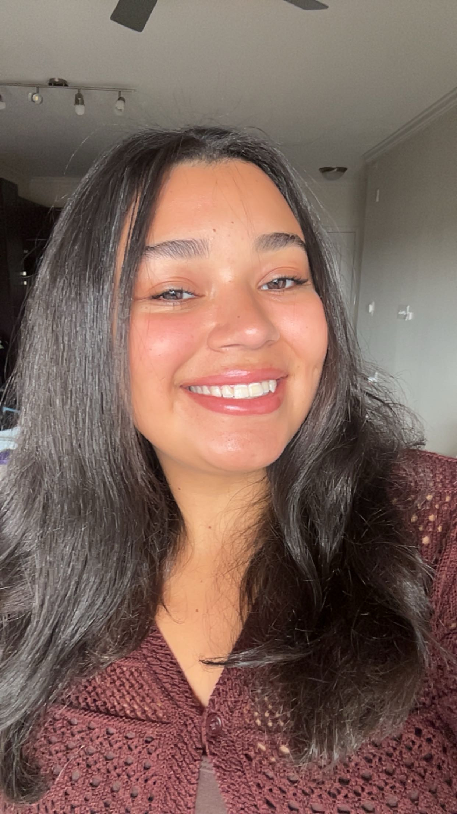

Hi! I'm Duda Maciel, a Brazilian immigrant and journalism student at the University of Maryland, where I'm pursuing my bachelor's degree in journalism with an expected graduation date of December 2027. My goal is to become a news producer.
I was born in Brazil and moved to the United States when I was 12 years old. Growing up between two countries and cultures has shaped who I am today and how I see the world. My journey hasn't always been easy, but it has taught me to work hard, embrace new opportunities and keep pushing toward my goals.
My passion for television started long before I knew I wanted to pursue journalism. When I was little, my mom worked as a front desk assistant at a television news station in Brazil. One day, I got to visit the station and even had my picture taken sitting behind the anchor desk. At the time, I had no idea that years later, I would be working toward a career in that same industry.

It wasn't until high school that I discovered how much I loved television production. I joined JAG-TV, my school's daily live news program, and eventually became head producer. I loved the fast-paced environment, the teamwork and the excitement of bringing a live show together every day. That experience sparked my interest in becoming a news producer.
After graduating high school, I attended Montgomery College, where I had the opportunity to work with Montgomery College Television (MCTV). During my time there, I gained hands-on experience in different areas of production, from working behind the scenes to being on camera, editing and producing my own stories. Each opportunity helped me become more confident in my abilities and made me even more excited about my future in television.
Now, as a journalism student at the University of Maryland, I'm taking advantage of every opportunity I can. I work on live sports productions with StudentU and Big Ten Network+, contribute to Capital News Service broadcasts and report and copy edit for Stories Beneath the Shell. Whether I'm technical directing, working in the control room or reporting a story, I'm constantly learning something new.
My journey hasn't just been about school. Since graduating high school, I've balanced working and attending college, often taking on multiple responsibilities at once. It hasn't always been easy to manage classes, work and production opportunities, but I know that every experience is helping me get closer to where I want to be.
Outside of journalism, I also reached a special personal milestone this year: I got married in May 2026! As I continue building my career, I'm also building a life with the people I love.
Sometimes I think back to that little girl sitting behind the anchor desk in Brazil. What was once just a childhood picture has become a reminder of how far I've come and how much further I want to go.
My goal is to become a news producer, continue growing in the industry and tell stories that make a difference. I still have so much to learn, but I'm excited for what's ahead. And who knows? Maybe one day I'll find myself back in a newsroom like the one I visited all those years ago, only this time, I'll be helping bring the news to life.